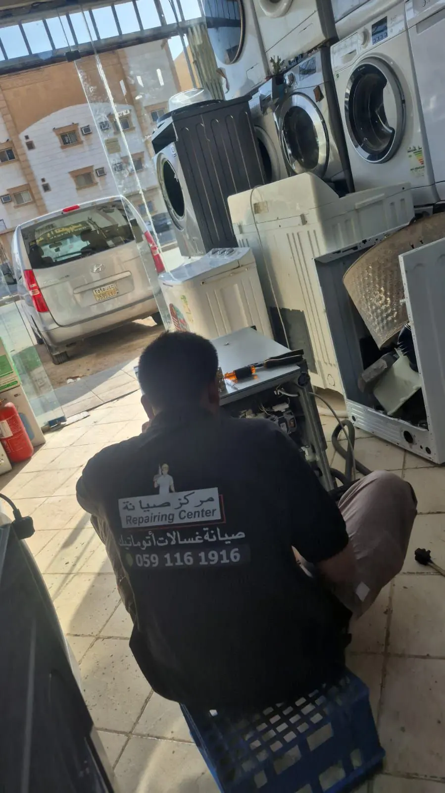

Local Washing Machine Repair, Done Right
We started this because appliance repair in Riyadh too often felt like guesswork: someone opens the machine, swaps a part and hopes. We wanted to be the washing machine technician who finds the actual fault, explains it in plain words, and fixes it so it stays fixed.
Keep Riyadh Homes Running Smoothly
We only work on three things: automatic washing machines, dishwashers and dryers. Doing less means we know these machines properly, instead of being average at everything.
What Sets Our Service Apart
Professional Technicians
We find the real fault first. No swapping parts and hoping for the best.
Quick Response
We book visits quickly, so you are not without your machine for long.
Transparent Service
You hear what is wrong and what it will cost before any repair starts. Nothing begins until you say yes.
Quality Repairs
The right parts and proper technique, so the same problem does not come back a month later.
A Professional Repair Approach
Every visit starts the same way. We look at the machine, work out what has really failed, tell you in plain words and give you the cost before any work begins. Then we use the right parts and technique for the machine in front of us.
What to Expect When You Call
Call or message us with the brand, the model if you know it, and what the machine is doing. A photo of the display code helps more than you would think. We will tell you honestly whether it sounds like a quick fix or something that needs a proper look, and we will arrange a visit at your address in Riyadh.
The technician looks at the machine where it stands. He checks the likely parts first, finds what has actually failed, and tells you the fault and the cost in plain words. If you say yes, he repairs it. If you decide not to go ahead, that is your call.
A few things we are straightforward about. We are an independent repair service, not the manufacturer's service center, so official warranty repairs go through the brand. We focus on automatic washing machines, dishwashers and dryers. And every repair carries a 30-day warranty on parts and labor.
Want to see how we handle specific faults? Start with automatic washing machine repair, or read the guides on washing machine not draining, not spinning and leaking. We are based in Al Yarmuk and cover the neighborhoods listed on our areas page.
Riyadh Service Coverage
We visit homes across Riyadh and the neighborhoods around it. Most repairs are done at your home, so there is nothing to carry.
How Customers Find Us and Related Searches
Broader searches such as “washing machine company”, “washing machine repairing”, “washing machine fixing”, “appliance repair technician”, “home appliance repair company”, “home appliances repair and service”, “appliances repairs and services”, “fix home appliances”, “repair home appliances near me” or “appliance home repair” also bring people here. For scope, we repair washing machines, dishwashers and dryers, and that is where our experience is.
Related searches:
Ready to Get Your Washing Machine Fixed?
Get in touch and we will find a time that suits you.